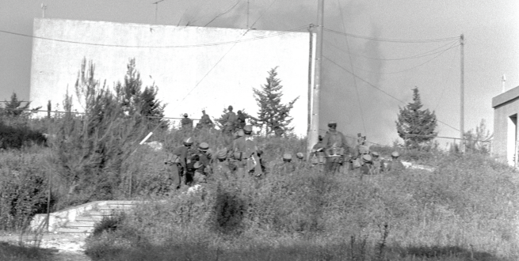

The Rebbe Responds to the Tragedy in Maalot
What terrible tragedy caused the Rebbe to change the usual order of the farbrengen? * Why did the Rebbe change his regular practice and daven Mincha downstairs on a seemingly ordinary day? * Letters to home, written by R’ Tuvia Zilberstrom during his k’vutza year, describing some of the events of Iyar 5734 in 770, with the Rebbe.
By R’ Tuvia Zilberstrom

Wednesday, 17th day of the Omer, 5734
Shalom to My Dear Family, for length of days and good years,
In about an hour and a half, the members of k’vutza [from the previous year] will go in and pass by the Rebbe’s door to receive a parting blessing, and in a few hours will be traveling to Eretz Yisroel. And certainly, they will give over and pass along to others what they absorbed here over the past full year. Much like the receiving of the Torah at Mount Sinai, but the ultimate purpose is to take it to every place, to the point of spreading the wellsprings outward.
It is hard to part, but regarding this, there is the Chassidic aphorism that “Chassidim never part from each other.”
Yesterday, I paid a visit to the bar mitzva of Ruth’s son; it was very nice… When I returned to 770, the yearly gathering of LYO was taking place, and exactly at that time, R’ Chadakov began to speak. I was totally impressed and the same goes for my friends. On the surface, he appears as a man who is completely [physically] run down and could barely etc., but when he opens his mouth, he is a celestially gifted orator and his mouth gives forth pearls, full of content. He touches on each topic, briefly and to the point, permeated with the teachings of the Sages and the like, and there was what to hear, being interesting and adding a lot.
Let us hope that you will receive the kos shel bracha, untouched by non-Jews etc. I also added some mezonos that I took from the Rebbe’s plate.
For now, to hear from and see each other,
Tuvia
ENTERING 770 IS ALWAYS A NEW FEELING
BS”D, Sunday afternoon, 21st of the Omer, 5734
Dearest Family, for length of days and good years,
Did you receive the kos shel bracha that I sent last week, including the lekach from the Rebbe’s plate?
Here everything is, boruch Hashem, in order and is working out very well. Such that the time flies quickly and there is a lot of ruchnius in the air. One just needs the right eyes to pick up the primary thing, and not to be in the dark and pick up that which is trivial.
We are already here for a full month, full in the literal sense, full and packed. Always, when we come to 770, there is a new and pleasant feeling, as if being here for the first time. Even if I go at night after Maariv, to learn in some place in the area, despite that, I always love, before I go to my room in the dormitory, to pass by and look again at the building which attracts thousands of Jews. That building, which for me was always closed off in a box on a paper picture, and now here it is alive and well, alive and giving life. And it feels impossible to leave it even for a brief instant, in thought and even in deed.
The material situation is, as I have written, very good. The food is plentiful, and even if I always come a bit late, everything is ready and available.
To hear from each other,
Tuvia
P.S. Today at Mincha, the Rebbe came down especially to daven in the large hall downstairs, due to the bus of tourists who appeared for a tour of Lubavitch. In this we can see mesirus nefesh, in that, despite the fact that every second is precious to the Rebbe, he changes his regular schedule, as the main thing is to draw another Jew close; maybe one more Jew will come closer to Judaism.
Surely, the members of the [previous] k’vutza recounted how they all passed by the door of the Rebbe, and each one of them received from his holy hand the “general letter,” along with a brief letter on the subject of Torah study, pointing out that the learning must be done specifically with toil etc. They also received three one-dollar bills to give for tz’daka and a parting blessing. Afterward, when he set out for the Ohel and they sang “Ki B’Simcha Seitzei’u,” the Rebbe encouraged them with a hand motion, and even after he entered his car, he continued to do so a number of times.
FORTUNATE IS THE EYE THAT SAW HIM
BS”D, Motzaei Shabbos Kodesh Acharei Mos-K’doshim, 28th of the Omer, 5734
To My Dear Family, for length of days and good years,
A good and blessed week to all of you, my dear ones.
Today is… which are four weeks. We are already four weeks after [the first day of] Pesach, and this reminds us that there are three weeks until Shavuos. The time passes and we are getting closer to Mattan Torah. “And the words are remembered and done” here in a very practical and tangible manner. This Shabbos, although we hoped for it, there was no farbrengen, and we hope that there will be one next week.
This evening, the 13th of Iyar, is the yahrtzait of the brother of the Rebbe, and he says Kaddish at all three of the prayers of the day. The pushing is excessive, but every word can be heard. Additionally, this time there was kiddush levana, and then too the Rebbe said Kaddish at the end. There was a lot of crowding there, and as the Rebbe was saying [the text] he turned around a few times. One time he pointed, and another time he shrugged toward the jammed crowd. Thinking that this was because of the crowding, we made room; but at the end, after he finished and said “Gut voch” and “Gut Chodesh,” he turned to the crowd and asked, “Why are they quiet and not saying kiddush levana? Was there even a minyan [saying it together] today? They make a tumult out of everything, and then are silent and don’t say kiddush levana.”
Afterward, he left for home, and there was an Israeli standing there, who I grabbed afterward for a brief chat. He came to see the Rebbe, as this is his first time that he left Eretz Yisroel. A long while ago, he served as a substitute teacher in a Chabad school where he heard about the Rebbe, and now, on his touring trip, he came to meet the Rebbe in person and managed a quick glance as the Rebbe left for home. He was filled with amazement about this place, the large beis midrash which attracts many thousands etc. It is sometimes interesting to hear the impressions of people visiting this place.
I would be interested in knowing when this letter actually arrives, as well as the previous ones, since it is usually sent on a Sunday with an Israeli at the airport. Therefore, it is good to know if it arrives in a timely manner and if it is worthwhile. Meanwhile, [let me wish you] everything good, a good Shabbos, and a happy and healthy summer.
Especially on the yom hilula of Rashbi, it is truly fitting to conclude with what is written about him and to apply it to the Rebbe: A man of G-d, holy is he; fortunate is the eye that him did see; a wise heart will plumb deeply; what from his mouth flowed freely; Adoneinu Moreinu V’Rabbeinu etc.
From Me,
Tuvia
SHARP SICHOS ABOUT MIHU YEHUDI
BS”D, Sunday, 20 Iyar 5734
To My Dear Family, for length of days and good years,
This Shabbos, Parshas Emor, there was a farbrengen starting at 1:30, as usual, until 6:00. Most of the farbrengen had to do with Lag B’Omer and the following Shabbos. As for the content of the sichos in detail, I hope that during the week I will send it, especially since the following week there will be a farbrengen again for Shabbos Mevarchim Sivan, and it seems, again, on the Shabbos following Shavuos, so it is not worthwhile to let it add up.
Among the sichos was a sharp one about Mihu Yehudi, about the ministers who still did not vacate their seats (i.e., ministerial positions) and they argue that this is a salvation for the entire Jewish people. Since in every lie there must be a smidgen of truth, as Rashi says in relation to the Spies, the truth here is that it is an actual salvation for their seats, nothing more, and all the while they come and claim that they speak on behalf of Toras Yisroel, Am Yisroel, the G-d of Israel, etc.
As was said in the general letter for Pesach at length, that a fetus in its mother’s innards eats what the mother eats, drinks, lives etc., so too the Mafdal (Mizrachi) is in the belly of Maarach (Labor) and is eating and drinking and living from this, whilst claiming that they speak in the name of the G-d of Israel. He spoke about this at length. You see how the Rebbe screams about this with all his might and that it costs him in his health.
He continued in this sicha along these lines, about when they come and claim that there are terrible problems with Syria, how it was already said at length at the Simchas Torah farbrengen, that they were asked [in other words, the Rebbe requested of the military leaders] to conquer Damascus. Thus, they would have been done with all this and they would have saved all the prisoners of war who, at the time, were all in Damascus.
In fact, all that they had to do was not give the orders to the soldiers to stop and not go, because they actually were raring to go there, and they actually had to hold them back when they needed to go, and only afterward would it have been possible to give Damascus back to them, and then they would have been a lowly nation as it says regarding Egypt, that it is a lowly nation. In addition, they could have taken and had possession of all of the papers and documents of the Russians of past and future plans that were there.
Now, it is already public knowledge in the newspapers, but at the time they hid this and only three or four knew about it and they still did not allow them to go etc. There are additional things which will be revealed, but in the meantime, they conceal it.
The Rebbe concluded that it will be “they will go in My statutes,” and this will lead to the entire continuation of the verses until, “and you shall lay down and there will be none to cause fear.”
I hope that I will expand on the sichos in greater detail in future letters.
After the farbrengen, we escorted the Rebbe home. As soon as the Rebbe goes out, the children wait and start the niggun that the Rebbe began after Mincha, “Nyet, Nyet Nikavo,” and the Rebbe smiles and urges them on with a wave of his hand.
Upon leaving, the Rebbe smiled broadly at the activists of the women’s convention who stood on the left, and all along the route he said to each one, men, women, and children: “Gut Shabbos,” with a big smile. He even held out a hand to a child for “Gut Shabbos.”
I will conclude, for now, and may we hear from each other until the next letter, and may Hashem send true peace to the Jewish people and as per the conclusion of one of the sichos: may there be Torah scholars increasing peace in the world.
Tuvia
P.S. Erev Shabbos, the Rebbe was at the Ohel from 1:45 until close to candle lighting.
THE TRAGEDY IN MAALOT
BS”D, Sunday, Parshas BaMidbar 5734
To My Dear Ones; Much Peace!
This time, I will once again send a letter with someone traveling to Eretz Yisroel.
We need to learn from every single thing; the one traveling arrived four weeks ago in order to be at the Rebbe again as a bachur. He had yechidus, received mashke for the wedding, davened in the Rebbe’s siddur today at Mincha, etc. He is getting married right after Shavuos.
There was a farbrengen this Shabbos, as I will yet write. The first two sichos had to do with a shocking incident (see sidebar), the opposite of rationality, the opposite of humanity, the opposite of proper behavior – even that of worldly proper behavior, as the Rebbe put it. From the outset, he said that he feels compelled to change from the usual, in which he begins [the farbrengen] by explaining Torah matters, etc. However, the time is a determining factor and causes a change in the order of things. Then he immediately began speaking about this [as described later], and he connected it with mezuza, which surely was already publicized in Eretz Yisroel.
As always, where you find his greatness, you find his humility, and it is time for the world to begin to understand that a statement of the Rebbe pertains not only to the hiddur and fulfillment of Torah and mitzvos, but literally to life itself. As we saw in the past with many things and places and still, due to the doubled and redoubled darkness, there is a veil over the eyes and, may Hashem protect us, not only for people on the street etc., but there is a “conceal I will conceal” (as Saba z”l once said) from the rabbis etc.
Similarly, he spoke about the desecration of the Shabbos taking place on Mount Chermon, and nobody says a word about it.
These days, the temperature has again risen somewhat, but yesterday it went down again a bit.
As I already wrote, on Thursday there was yechidus, and tonight on Sunday there will also be yechidus. Among the different things that I have heard, a pilot from Eretz Yisroel who had been held captive by the Egyptians, went in for yechidus and spent thirty-five minutes inside, as the Rebbe asked him about every detail of the sequence of events and his condition.
Also, the first member of our k’vutza went in for yechidus, and obviously we all shared in his excitement.
From subject to subject on the same subject, mazel tov to Abba for his birthday, and may he merit, together with Ima, long days and years in pleasantness.
So on to life, and a gut Yom Tov and Shabbat shalom, and for good tidings,
Tuvia
THE NUMBER OF UNFIT MEZUZOS
MATCHED THE NUMBER OF CASUALTIES
The diary refers to a shocking statement made by the Rebbe at the beginning of the farbrengen of Shabbos Parshas B’Chukosai, to the extent that he changed the order of the subject matter of the farbrengen, in light of the tragic event that had taken place.
The following is the background to that story. It was the morning of 23 Iyar, 5734. A group of students from Tzfas who were on the school’s annual trip spent the night in a school in Maalot. At some point, a group of terrorists took over the school and held the students hostage. The terrorists were in control of one hundred and fifty students and ten adults. They carried out negotiations in which they demanded the release of twenty terrorists being held in Israeli prisons.
After many hours of high tension, the Minister of Defense, Moshe Dayan, gave the instruction to rescue the children by force. The results of that military action were disastrous. From among the hostages, twenty-one students and three adults were killed, with another sixty-eight injured. Even among the rescuers there were wounded and one dead. The act of the terrorists had the entire country in shock, especially due to the horrific outcome. Pictures of the murdered children and stories of the survivors sent shock-waves throughout Eretz Yisroel and the entire Jewish world.
The director of the Beis Chabad Tzfas in those days, R’ Avrohom Eisenbach, later checked the mezuzos in the school the students attended, and all of the mezuzos were pasul (unfit for use). When they counted the pasul mezuzos, they discovered that their number was identical to the number of the students who were killed. This information spread quickly all across the country.
On the Shabbos following the tragedy, the Rebbe spoke in obvious pain about the pasul mezuzos that were found in the school, and the connection between the number of mezuzos and the number of victims. In a rare public statement, the Rebbe revealed that “they pushed him” to launch this campaign and everybody understood who were the “they” that pushed the Rebbe…
“A yungerman [Rabbi Eisenbach – SZB] called me on the phone from Tzfas and informed me [during the hostage situation] that since these children are not from Maalot but are residents of Tzfas on a trip in Maalot, he is asking for a blessing to mention them at the tziyun, to mention them in davening.
“Afterward, he volunteered and informed me that during a check of the mezuzos in their school [in Tzfas] they found seventeen mezuzos and checked them all and found that they were all pasul, and at that point the count of the students who were killed stood at seventeen. The next day, it was announced in the newspapers that there were more, twenty killed. It became a wonder to me, and I requested of him to look again into the mezuza situation in that school, and they discovered that there were a few more rooms with four more mezuzos, two of which were pasul and the other two were questionable. Here we see in a revealed manner that this is Hashgacha Pratis. In the first notification, they said that there were seventeen children and also that there were seventeen mezuzos that were pasul. Then they notified about another three and they notified about another three mezuzos that were pasul.”
And here is where the Rebbe said some really shocking words, revealing how Mivtza Mezuza came to be:
“I was involved with passion in Mivtza Mezuza; they pushed me and gave me no rest from demanding and speaking about mezuza. I myself did not know why, and at the time I said reasons, ‘He watches the doorposts of Yisroel,’ etc. However, why specifically the mitzva of mezuza; there are many mitzvos, and each mitzva has its segula, although we do not do the mitzvos in order to receive the rewards, but only because it is a commandment from Hashem. And now we see how this entire event was connected to the mitzva of mezuza.”
Beis Moshiach (staff). "The Rebbe Responds to the Tragedy in Maalot." Beis Moshiach, no. 1116 (May 3, 2018).